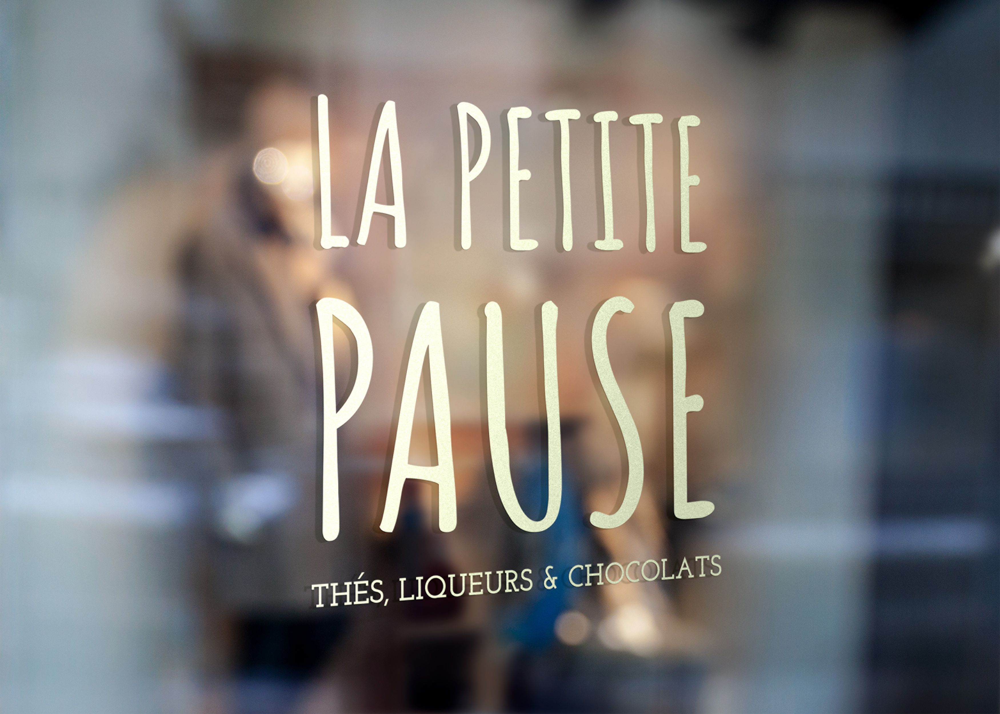
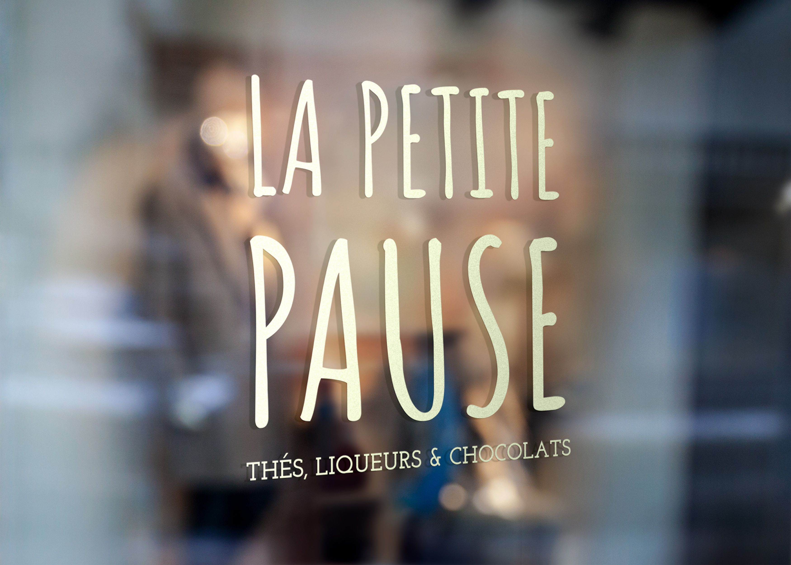

La Petite Pause
 

Création de la marque La Petite Pause, un salon de thé de dégustation installé dans le centre ville de Bordeaux. Elle propose des thés, des liqueurs mais également des chocolats.
C'est une marque simple, naturelle et jeune.
6 gammes sont crée et décliné sur des ballotins et tablettes de chocolats ainsi que des boites et des sachets de thés.